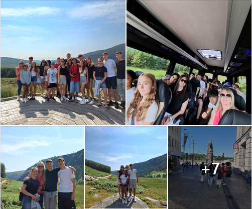
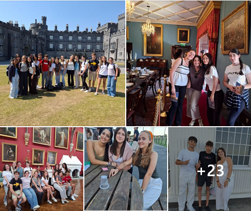

¡Una semana inolvidable llena de nuevas experiencias! ✨ Desde una emocionante aventura
vikinga en realidad virtual y una visita a la hermosa ciudad de Waterford, hasta el
descubrimiento de los impresionantes lagos de Glendalough. También disfrutamos de una
divertida clase de cocina, una tarde relajante en el cine, celebramos los logros de todos
con nuestra ceremonia de entrega de certificados y, finalmente, nos dirigimos al aeropuerto
de Dublín para regresar a casa con maravillosos recuerdos, nuevas amistades y mucho inglés
por el camino. ✈️

¡Nuestros estudiantes están aprovechando al máximo su tiempo en Irlanda! 🇮🇪 Desde emocionantes
deportes y divertidas actividades culinarias hasta experiencias inolvidables, cada día es una
nueva oportunidad para aprender, hacer amigos y mejorar su inglés en situaciones reales. 🌍✨
#ListosParaVolar #ExperienciaInternacional #AprenderHaciendo #EstudiarEnElExtranjero
#InmersiónEnInglés